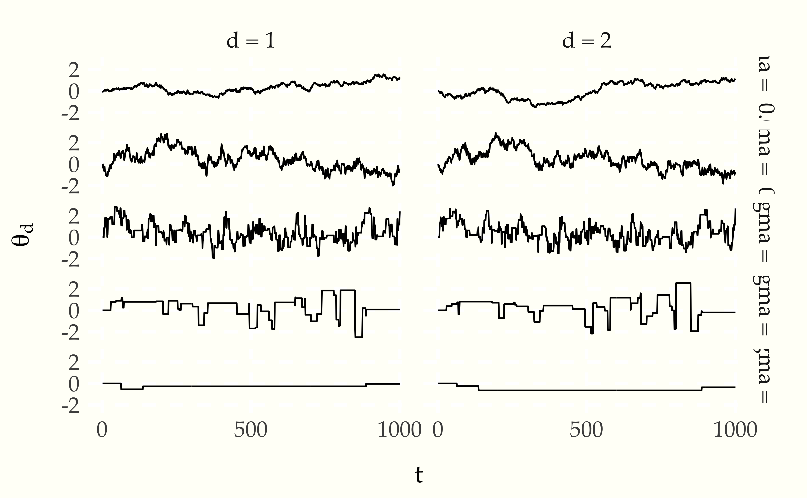
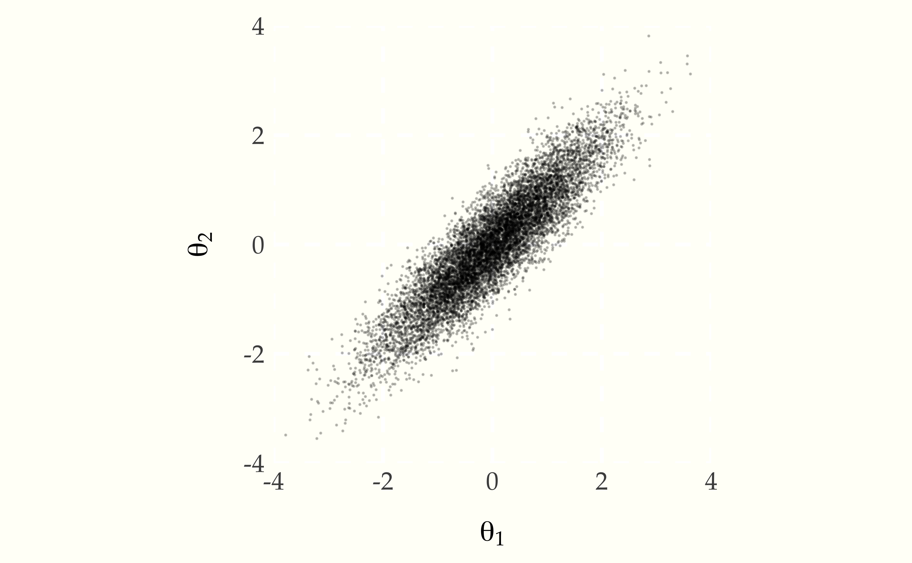

The Metropolis algorithm is a general purpose technique to sample from an arbitrary target density.231 We are particularly interested in sampling from target posterior distributions in order to compute expectations corresponding to parameter estimates, event probabilities, predictions, and comparisons. The algorithm constructs a Markov chain whose stationary distribution is equal to the target density, then runs the chain long enough to draw a sample from the target density.
Suppose \(p(\theta)\) is the density of an \(N\)-dimensional target distribution over from which we want to sample.232 Typically, this is a posterior \(p(\theta \mid y)\) but we will suppress \(y\) here as it remains constant throughout. For the sake of convenience, we will assume it has support on all real values, i.e., \(p(\theta) > 0\) for all \(\theta \in \mathbb{R}^N\).233 Most distributions with constrained support on \(\mathbb{R}^N\) can be smoothly transformed to have support on all of \(\mathbb{R}^N\).
The random walk Metropolis algorithm generates a Markov chain \(\theta^{(1)}, \theta^{(2)}, \ldots\) whose stationary distribution is \(p(\theta).\) The algorithm can start anywhere, so we will simply start it at the origin,234 Later, we will have motivation to simulate multiple chains from diffuse starting locations, but for now, starting at the origin keeps things simple.
\(\theta^{(1)} = 0.\)
For each subsequent step \(m + 1\), we first simulate a proposed jump,235 The algorithm may be generalized to allow arbitrary jump proposal distributions. Popular choices include varying scale by dimension, multivariate normals to account for correlation, and longer tails.
\[ \epsilon^{(m)} \sim \mbox{normal}(0, \sigma), \]
and a uniform variate,
\[ u^{(m)} \sim \mbox{uniform}(0, 1), \]
to inform a probabilistic decision of whether or not to move from state \(\theta^{(m)}\) to state \(\theta^{(m)} + \epsilon^{(m)}\). With these simulated values in hand, the random walk Metropolis algorithm sets the next state to be
\[ \theta^{(m + 1)} \ = \ \begin{cases} \theta^{(m)} + \epsilon^{(m)} & \mbox{if } \ u^{(m)} \ < \ \frac{\displaystyle p\!\left( \theta^{(m)} + \epsilon^{(m)} \right)} {\displaystyle p\!\left( \theta^{(m)} \right)}, \\[6pt] \theta^{(m)} & \mbox{otherwise} \end{cases} \]
Given the definition, we always accept the proposed jump if it takes us to a state of higher density, i.e., if \(p\!\left( \theta^{(m)} + \epsilon^{(m)} \right) > p\!\left( \theta^{(m)} \right).\) If the jump takes us to a state of lower density, we accept the jump with probability equal to the density ratio of the proposed state and current state. This means the continuous-state Markov chain defined by the Metropolis algorithm can stay in the same state from time step to time step.236 In keeping with our notation for simulation, we use \(m\) rather than \(t\) to index the “time” steps.
The pseudocode for the random walk Metropolis algorithm just follows the mathematical definition of the algorithm, using local variables for \(\epsilon\) and \(u\). As inputs, it takes the number \(M\) of steps to simulate, the jump scale \(\sigma\), and the target density \(p(\theta)\), and it returns the simulated Markov chain \(\theta^{(1)}, \theta^{(2)}, \ldots, \theta^{(M)}\).
theta(0) = 0
for m in 2:M
for (n in 1:N)
epsilon[n] = normal_rng(0, sigma)
u = uniform_rng(0, 1)
accept(m) = u < p(theta(m) + epsilon) / p(theta(m))
if (accept(m))
theta(m + 1) = theta(m) + epsilon
else
theta(m + 1) = theta(m)
accept_rate = sum(accept) / (M - 1)The final step in the computation calculates the acceptance rate, which is the proportion of proposed jumps that were accepted in the particular execution of the algorithm.237 This rate will vary based on the random number generator.
Because we may be working in high dimensions and with big data sets,
we need to be careful to avoid arithmetic underflow by carrying out
all computation on the log scale. Specifically, we assume that rather
than a function to compute p(), we are given a function to compute
log p(). Because both sides of the acceptance test inequality are
positive and the logarithm function is monotonic, we can just take the
log of both sides and define
accept = log(u) < log(p(theta(m) + epsilon) / p(theta(m)))In practice, we may only know the density up to an additive constant. We’ll only be able to compute \(\log q(\theta)\), where
\[ \log q(\theta) = \log p(\theta) + \mbox{const}. \]
for some unknown constant that doesn’t depend on \(\theta\). Although unregularized densities may be negative, we don’t get in trouble with negative logarithms because the constants cancel out,
\[ \begin{array}{rcl} \left( \log p\!\left(\theta^{(m)} + \epsilon\right) + \mbox{const} \right) - \left( \log p\!\left(\theta^{(m)}\right) + \mbox{const} \right) & = & \log p\!\left(\theta^{(m)} + \epsilon\right) - \log p\!\left(\theta^{(m)}\right) \\[8pt] & = & \log \frac{\textstyle p\!\left(\theta^{(m)} + \epsilon\right)} {\textstyle p\!\left(\theta^{(m)}\right)}. \end{array} \]
As an example, we can start with a two-dimensional density \(p(\theta)\) in which the values \(\theta = (\theta_1, \theta_2)\) are positively correlated,238 The distribution is bivariate normal located at the origin, with unit scale and 0.9 correlation, i.e., with covariance matrix \[ \Sigma \ = \ \begin{bmatrix} 1 & 0.9 \\ 0.9 & 1 \end{bmatrix} \] and density \[ \begin{array}{rcl} \log p(\theta) & = & \log \, \mbox{multi-normal}\!\left(\theta \ \Big| \ 0, \, \Sigma\right) \\[4pt] & \propto & -\frac{1}{2} \, \theta^{\top} \, \Sigma^{-1} \, \theta \ + \ \mbox{const} \\[4pt] & \approx & -2.6 \times \theta_1^2 \ - \ 2.6 \times \theta_2^2 \ + \ 4.7 \times \theta_1 \theta_2 + \mbox{const.} \end{array} \]
\[ \log p(\theta) = -2.6 \, \theta_1^2 \ - \ 2.6 \, \theta_2^2 \ + \ 4.7 \, \theta_1 \, \theta_2 + \mbox{const.} \]
Let’s see what we get when taking draws using the Metropolis algorithm. First, let’s try \(\sigma \in 0.125, 0.25, 0.5\) and start at \(\theta(1) = (0, 0).\)239 \((0, 0)\) is coincidentally the point at which the example density is maximized. This requires escaping from the point of maximum log density.

Here’s a scatterplot of independent draws.240 Because it’s bivariate normal, we can cheat and use off-the-shelf algorithms to generate independent draws.
Figure 19.1: Scatterplot of draws from a bivariate normal with unit scale and correlation 0.9.
